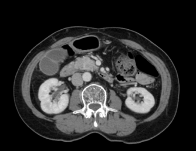

Surface what routine review can miss
Pancreatic lesions can be subtle on abdominal CT. PANCREASaver® provides an automated second read to bring suspicious findings forward for radiologist attention.
PANCREASaver® adds an automated AI second read to contrast-enhanced abdominal CT, helping radiologists surface suspicious pancreatic lesions before they are overlooked in a busy worklist.
U.S. status: 510(k) submitted July 2026 — under FDA review; not yet cleared for U.S. marketing.
Built for the pressure points radiology teams face every day: subtle findings, crowded worklists and limited time.
Pancreatic lesions can be subtle on abdominal CT. PANCREASaver® provides an automated second read to bring suspicious findings forward for radiologist attention.
Automatically analyzed studies can be flagged for review, helping teams focus attention where it matters most.
PANCREASaver® fits the PACS workflow your team already knows, adding decision support without requiring a new viewing habit.
Pancreatic lesions hide in plain sight on routine abdominal CT. PANCREASaver® reviews the exact same images and marks what the human eye can overlook — automatically, in minutes, before the report is even started.


Real clinical CT images with actual PANCREASaver® output overlay. Radiologists always review and confirm AI findings.
PANCREASaver® is FDA Breakthrough-designated medical device software (SaMD). The moment an abdominal CT scan finishes, it analyzes the images, flags suspicious pancreatic findings, and sends the result back into the radiology workflow — supporting earlier review without changing the way your team works.
Analysis starts automatically when the scan completes — no extra steps for physicians. CNN deep learning and radiomics engines run in parallel.
The cited study reported 92.1% sensitivity for lesions under 2cm. PANCREASaver® is intended to support radiologist review, not replace clinical judgment.
5 international journal papers and a nationwide multicenter AUC of 0.95, led by the National Taiwan University Hospital team.
Patient undergoes a routine abdominal CT; images stream into the PACS as usual.
PANCREASaver® analyzes the full pancreas within minutes — no clicks required.
The lesion is locked and marked; a priority alert fires back into the PACS worklist.
The radiologist confirms the marks and signs the final report — AI never replaces the read.
PANCREASaver® was designed around the way radiology departments already work. It connects to your existing PACS — no new viewer, no extra clicks, no rip-and-replace.
DICOM-native integration connects to the PACS/RIS infrastructure you already run — the AI fits the system, not the other way around.
Compatible with GE, Siemens, Philips, Canon and more — it runs on the scanners and viewers you already own.
Radiologists read exactly as they always have. AI works silently in the background and surfaces what matters.
Typically live in as little as 4 weeks with minimal IT lift — onboarding, training and go-live support included.
A DICOM link connects PANCREASaver® to your CT scanners and PACS.
The AI triggers automatically the moment a scan completes — nothing to launch, nothing to click.
Suspicious studies are prioritized in the worklist with the lesion marked for the radiologist.
Structured findings are delivered back into your reporting workflow, ready for review and sign-off.
From Stone Web Viewer integration to Bridge login, PANCREASaver® is deployed at medical centers, regional hospitals and screening centers — 2,000+ scans reviewed.
 PANCREASaver®
PANCREASaver®
Five papers in leading journals — every figure on this page carries a source you can open.
A cross-racial study of the AI detection engine reported 92.1% sensitivity for tumors under 2cm and correctly recovered 11 of 12 cancers missed by radiologists. The study details and limitations are available in the original paper.
Nationwide multi-center performance with national-level AUC 0.95 — real clinical validation led by the NTUH team.
2,000+ cases interpreted in routine practice, including independent third-party validation — evidence from the field, not just the lab.
The full evidence hall — AUC curves, regulatory approvals, and the integration workflow.
Go to Clinicians →5 international journal papers with topics, abstracts and PubMed links.
Open the evidence →TFDA license, FDA Breakthrough, 510(k) status, and 10 US/TW patents — stated exactly as they are.
See regulatory status →Yes. PANCREASaver® is DICOM-native and integrates with the PACS/RIS infrastructure you already run — no new viewer and no replacement of existing systems.
Typically live in as little as 4 weeks, with minimal IT lift. On-premises and cloud deployment options are available, and our team handles onboarding, training and go-live support.
No. Radiologists read exactly as they always have — AI runs automatically in the background and surfaces prioritized findings in the worklist.
It holds FDA Breakthrough Device Designation; a 510(k) was submitted in July 2026 and is under review. It is TFDA-licensed in Taiwan (license no. 衛部醫器製字第007946號).
Contrast-enhanced abdominal CT, per the approved indications — the same scans your department already performs, with no extra acquisition protocol.
Verbatim third-party statements on the peer-reviewed studies behind PANCREASaver®. Quotes are about the research — not the product — and each carries its original source.
“
…accurate detection of pancreatic cancer on CT scans, especially for tumors smaller than 2 cm. Early detection… greatly increases the chances of survival.
“
This deep learning–based tool had very good accuracy, and sensitivity approaching that of subspecialist radiologists… Tools such as this promise to benefit routine workflow and patient care.
“
These promising results show that CNN as a second reader can reduce misdiagnosis of pancreatic cancer and possibly lead to improved patient outcomes.
Book a live demo and let the AI show you what it sees on a real CT.
Talk to us